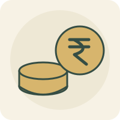

STAGE 01 · Foundation
नींव
First sounds, script, essential needs and polite requests.
Entry: No previous Hindi required.
Start lessons →
 01
01नमस्ते और परिचय
Greetings & introductions2 lessons · 1 worksheet
Open → 02
02स्वर और ध्वनि
Vowels & listening2 lessons · 1 worksheet
Open → 03
03व्यंजन और उच्चारण
Consonants & pronunciation2 lessons · 1 worksheet
Open → 04
04मात्राएँ और अक्षर
Matras & script combinations2 lessons · 1 worksheet
Open →
05गिनती और कीमत
Numbers & prices2 lessons · 1 worksheet
Open → 06
06समय और दिन
Time & days2 lessons · 1 worksheet
Open → 07
07मदद माँगना
Polite requests & repair2 lessons · 1 worksheet
Open → 08
08पहला स्वतंत्र संवाद
Foundation review2 lessons · 1 worksheet
Open →